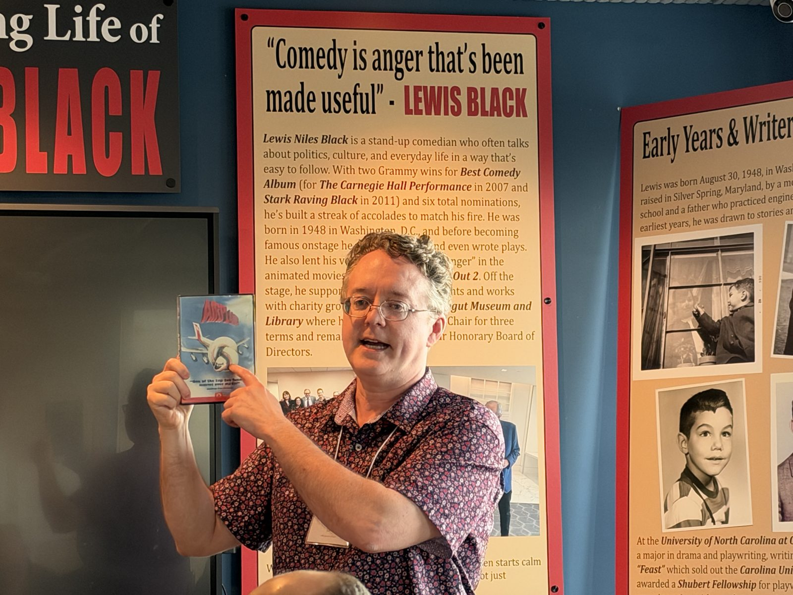
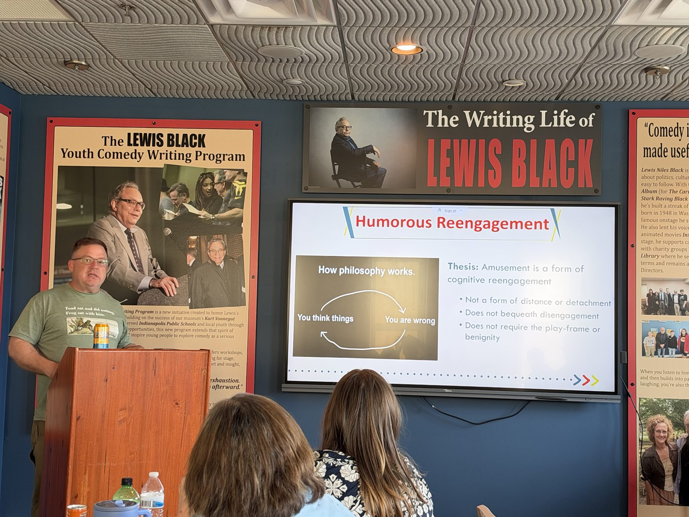
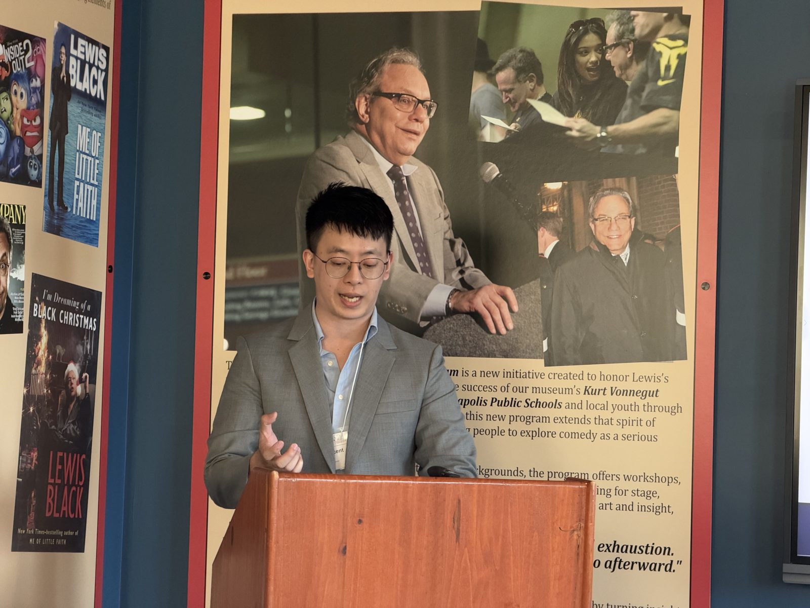
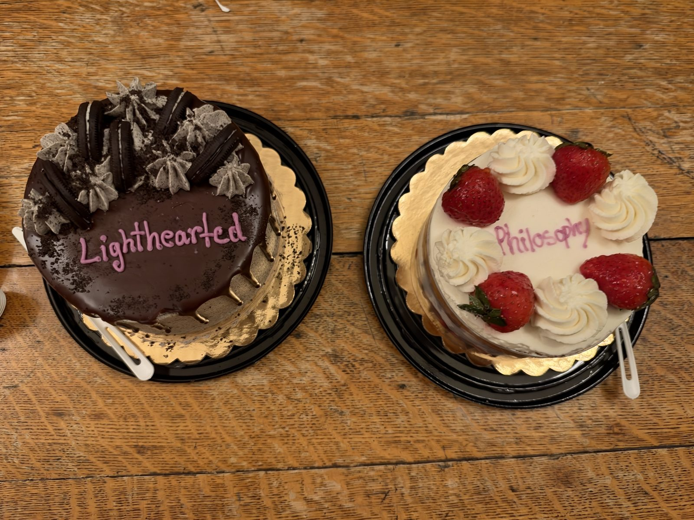
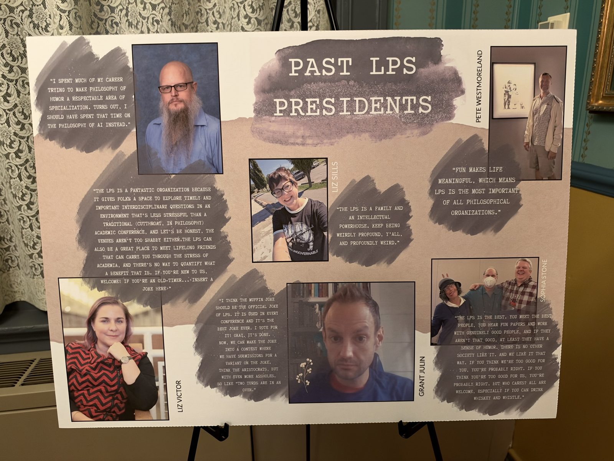
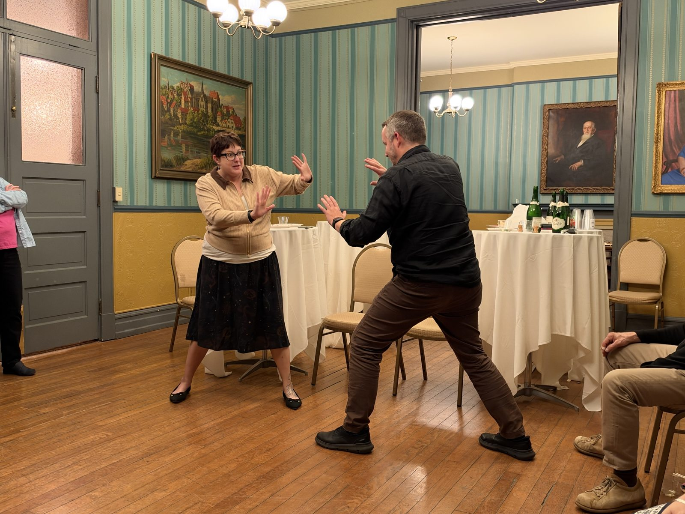
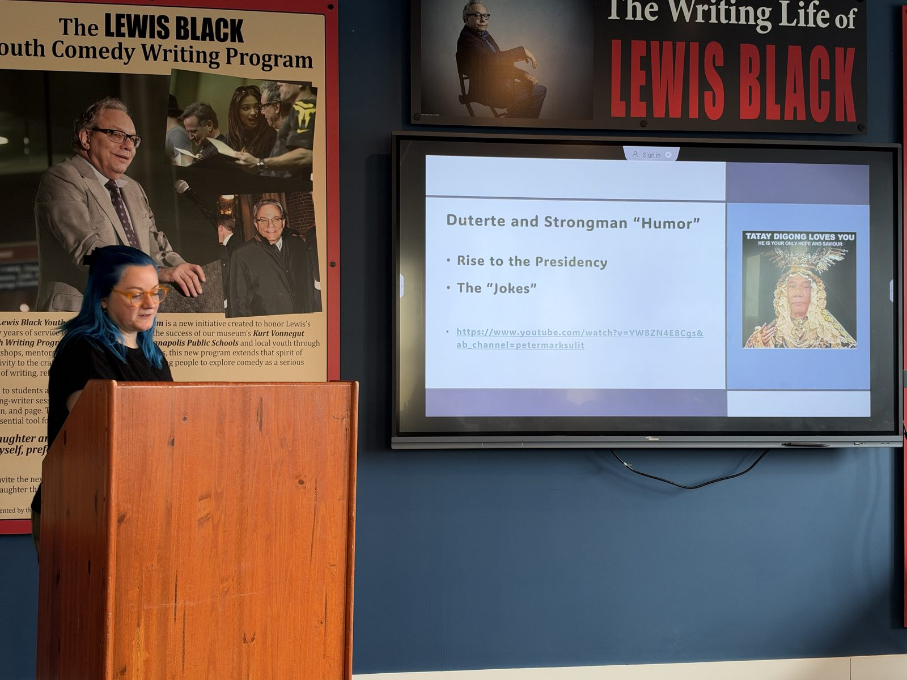
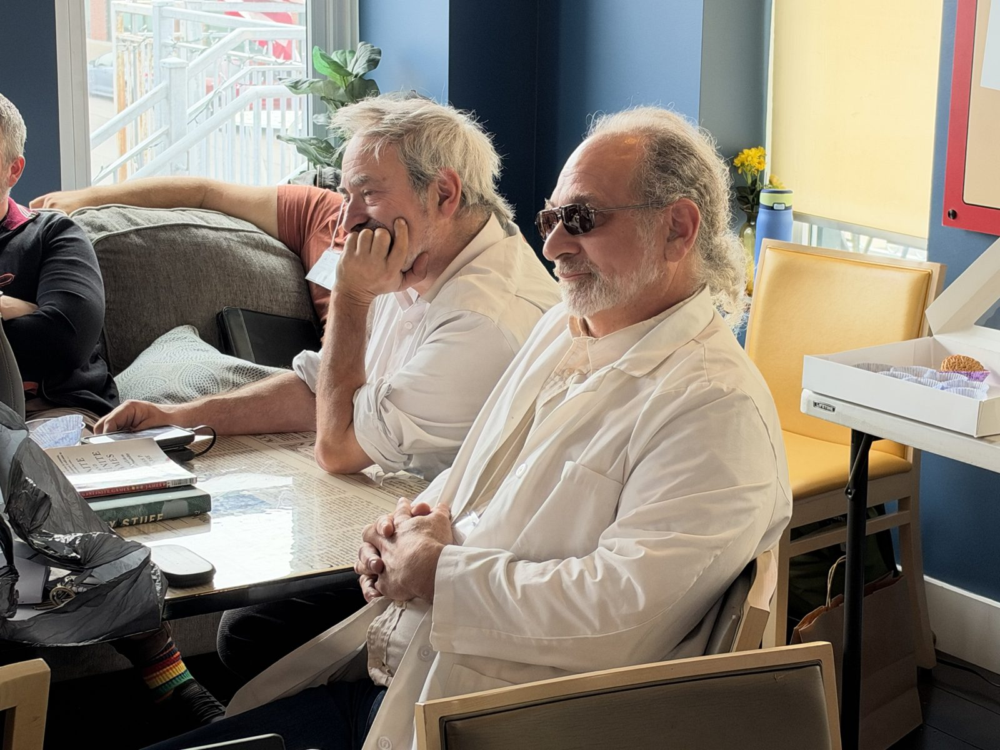
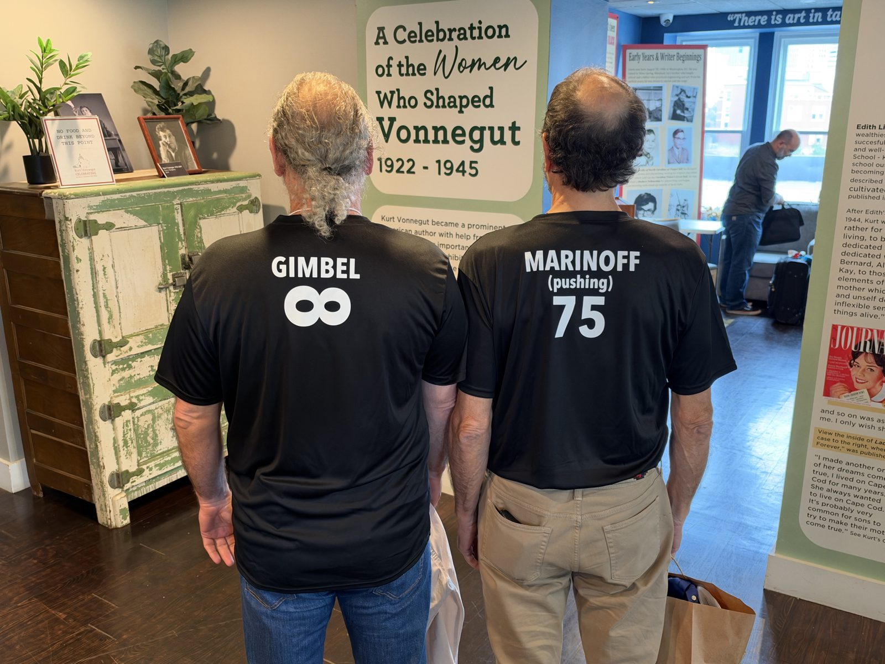

20th Annual Conference a Success!









Thank you to everyone who joined us at the Kurt Vonnegut Museum and Library in Indianapolis for the 20th Annual Lighthearted Philosophers’ Society Conference! We are grateful to our hosts for such a warm welcome. Over two days, friends old and new gathered for lively discussion and debate, including papers on the clash theory of humor, humor and truth, humor in American justice, and jokes as authoritarian propaganda. We also held a Vonnegut and Humor panel, a student paper panel, and a debate on whether Cicero was right.
The Joseph S. Ellin Memorial Essay Prize ($100) for best paper went to Vanessa Voss, and the Richard C. Richards Almost Memorial Prize ($50) for best heckle went to Steve Gimbel.
On the first night, we celebrated our 20th anniversary with champagne and cake at The Athenæum, followed by an evening of improv exercises led by improv coach and IU Kokomo Communications Professor Joann Kaiser.
Next year, we’ll meet October 15-16, 2027, in Rochester, New York, sponsored by the University of Rochester and hosted by the Strong Museum of Play. We hope to see you there!
View Past Conferences